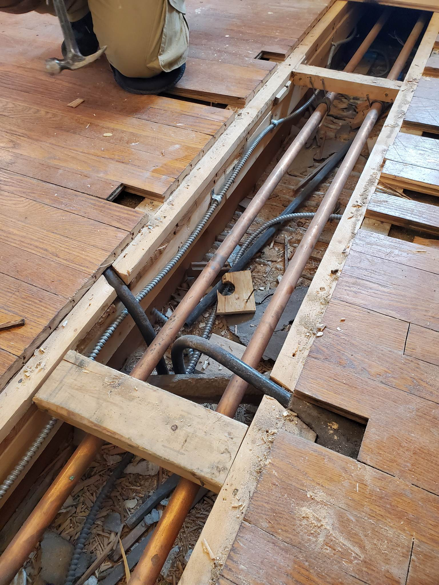
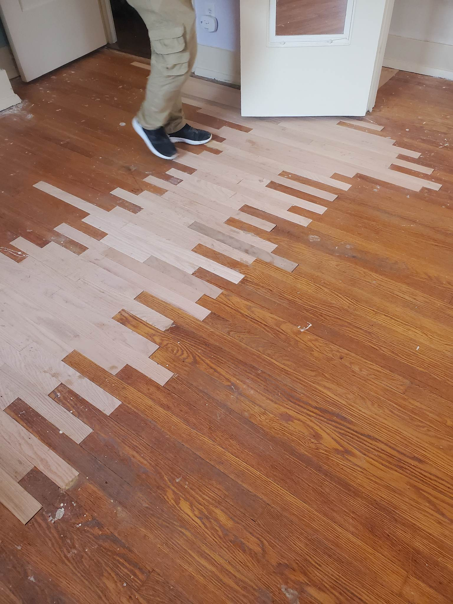

Refinishing and Repairing Floors and Stairs
Home Page
Repairing floors and stairs is a good alternative to completely replacing floors because it does not require removing all of the flooring to fix a problem. If something needs to be accessed from under the floor, only those floorboards must be removed. Replacing damaged flooring can save you a lot of money if you only want to replace certain floorbaords.

